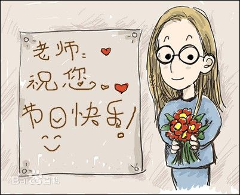

尊师重教是中国的传统，早在公元前11世纪的西周时期，就提出“弟子事师，敬同于父”。教师节，旨在肯定教师为教育事业所做的贡献。1985年，第六届全国人大常委会第九次会议通过了国务院关于建立教师节的议案，会议决定将每年的9月10日定为教师节。1985年9月10日，是中国第一个教师节。

中国有悠久的尊师重道传统，古代就有“人有三尊，君、父、 图解教师节 图解教师节 师”的说法。 《吕氏春秋·尊师》云：
“生则谨养，死则敬祭，此尊师之道也。”
“师者，所以传道授业解惑也。”
在中国几千年的历史中，“师”，总是受人尊敬，被人爱戴的。老师，是人类文化得以传承的功臣，他们的贡献巨大。
教师节的宗旨就是提高人们对教师为教育事业所做贡献的认识和评价。
1931年，教育家邰爽秋、程其保等在南京中央大学集会，发表要求“改善教师待遇，保障教师工作和增进教师修养”的宣言，并议定6月6日为教师节，也称双六节。
这个教师节没有被当时的国民党政府承认，但在全国各地产生了一定影响。1939年国民党政府决定立孔子诞辰日8月27日为教师节，并颁发了《教师节纪念暂行办法》，但当时未能在全国推行。[1-2]
解放后废除了6月6日的教师节，改用“五一国际劳动节”为教师节。[3]
1951年，教育部和全国教育工会曾宣布“五一劳动节”同时为“教师节”，但执行的结果是教师节没有了。文化大革命中，教师被贬为“臭老九”，社会地位极其低下。
党的十一届三中全会拨乱反正，从1980年起，全国教育工会开展“庆教龄”、“五讲四美，为人师表”等一系列尊师重教活动，提高了教师的政治、社会地位。
1981年3月，中国人民政治协商会议第五届全国委员会第四次会
教师节
教师节
议上，中国民主促进会的17位政协委员联名提交了一份提案：建议确定全国教师节日期及活动内容案。提案指出，教师担负着培养四化建设人才的重任，应当享有崇高的社会地位。
1982年4月，教育部党组和全国教育工会分党组联合，由张承先和方明共同签发的“关于恢复‘教师节’的请示报告”送中央书记处，报告中并建议以马克思的诞辰日5月5日为教师节。
1983年3月全国政协六届一次会议上，方明和民进18位政协委员联名再次提出“为提高教师的社会地位，造成尊师重教的社会风尚，建议恢复教师节案”。同年9月，中宣部办公厅致函教育部办公厅，经研究政协一次会议方明等同志的提案，同意恢复教师节。
1983年12月，由教育部何东昌部长和方明共同签发的教育部党组和全国教育工会分党组“关于恢复‘教师节’的请示”送中央宣传部。
1984年10月，万里、习仲勋等中央领导对教育部党组和全国教育工会分党组的请示圈阅。
教师节
教师节
1984年12月，教育部党组和全国教育工会分党组“关于建立‘教师节’的报告”送中央书记处并报国务院。
1985年1月，全国人大常委会通过了这一议案，确定每年的9月10日为教师节。[2]
从2004年开始，时任全国政协委员的著名人文学者李汉秋以提案的方式，多次呼吁以孔子诞辰作为教师节。他认为：传统节日是世代相传，我们已无权择日；而重新设定的节日是由我们自己择日的，就应当考虑这日子是否有历史文化内涵、如何接续历史传统。教师节应当是很有文化内涵的节日，应该延续源远流长的历史传统。以孔子诞辰作为中华教师节是非常合适的。经权威部门研究测算，孔子诞生于公元前551年9月28日（阳历），这个日子也恰当其时：新学年开始时的繁忙已经过去，可以有时间筹办教师节和国庆节。
国际节日 国际教师节 1966年10月5日，国际劳工组织和联合国教科文组织联合通过了《关于教师地位的建议》。 1994年初，联合国教科文组织宣布从是年起，每年10月5日为“国际教师节”，目的是为了向全世界的所有教师表达国际社会的崇敬之情，“感谢他们的辛勤劳动，他们的敬业精神，以及他们为把今天的孩子培养成明天的公民所承担的巨大责任。”就在这年10月5日，出席在日内瓦召开的国际教育大会第44届会议的代表，欢聚一起庆祝“国际教师节”的诞生。[8] 各国时间 葡萄牙：教师节是每年的5月18日。葡萄牙是世界上最早确定教师节的国家。[8] 美国：每年9月28日定为教师节。这是中美建交前的1971年由美国两院法定通过的。 波兰：每年10月14日为国家教育日和教师节。[8] 法国：教师节是每年的12月25日。 俄罗斯：每年10月的第一个周日定为教师节。 朝鲜：为纪念金日成1977年9月5日发表《社会主义教育提纲》，将这天定为教师节。[8] 印度：每年9月5日定为教师节，而每年11月14日的印度儿童节同时定为印度儿童教育工作者的节日。 蒙古：从1967年起，把每年2月的第一个星期日定为教师日。[8] 阿尔巴尼亚：每年的3月7日，正好在妇女节的前一天。在教师节这天，阿尔巴尼亚放假一天。 拉丁美洲：教师节为9月11日，这个节日是在1943年巴拿马所举行的泛美教育会议（Interamerican Conference on Education）上所制定的。这天也是阿根廷教育家Domingo Faustino Sarmiento的逝世纪念日。许多拉丁美洲国家也会根据自己的国家的历史，设立教师节。在巴西，教师节是每年的10月15日；墨西哥的教师节始于1917年的9月，由国家议会颁布5月15日为教师节，并于1918年首次庆祝。 韩国：教师节是5月15日，在这天，学生们会送给老师们康乃馨，并和学生一起度过欢愉的一天。[8] 新加坡：教师节是9月1日。这天新加坡所有的学校放假一天。 委内瑞拉：每年1月15日定为教师节。这天除庆祝大会外，还有向教师献花等敬师活动。[8] 泰国：每年1月16日定为教师节。这天全国学校放假，隆重庆祝。各地的庆祝仪式上，向当年退休和刚参加工作的教师颁发奖状并献花。[8] 苏丹：从1971年2月24日起，全国实行教育改革，将这天定为教师节。中、小学一律放假一天，以示庆祝和纪念。 捷克、斯洛伐克：每年3月28日定为教师节。[9] 这天前后的一周之内，全国广泛而隆重地举行尊师重教活动。国家向优秀教师颁发勋章或授予荣誉称号等。 德国：每年6月12日定为教师节。各地开展尊师敬师活动。[8] 匈牙利：每年6月的第一个周一定为教师节。节前，国家要召开教师代表大会，表彰和命名一批优秀的教育工作者，有的还颁以重奖。[8]
| 学员 | 专业 | 授课老师 |
|---|---|---|
| 黄淑芝 | 软测 | 李明飞 |
| 李英明 | 市场 | |
| 李娜 | 银行 | |
| 注：还有很多同学，在此就不一一列举了。 | ||